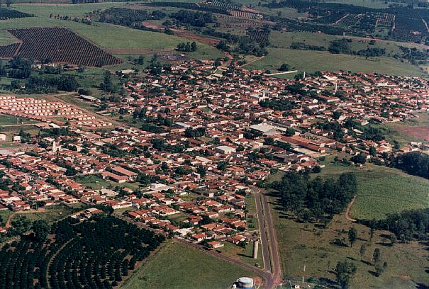
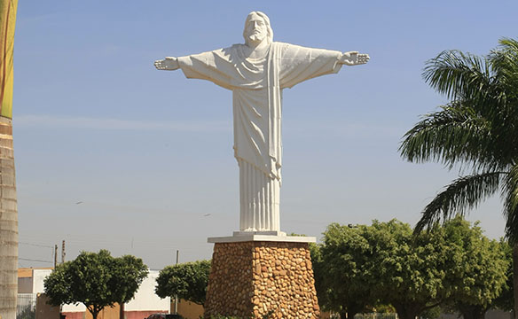
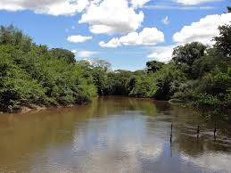
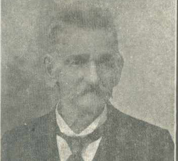

A pequena cidade de Taiúva é localizada na região Norte do Estado de São Paulo, à margem da Rodovia Brigadeiro Faria Lima, a 360 km da Capital. Limita-se com os municípios de Bebedouro, Jaboticabal, Pitangueiras, Monte Alto, Taquaral e Taiaçú.

Cidade de Taiúva
Os habitantes se chamam Taiuvenses.
O município se estende por 132,5 km² e contava com 5.447 habitantes no último censo. A densidade demográfica é de 41,1 habitantes por km² no território do município.
Situado a 627 metros de altitude.
Latitude
21° 7' 26''
SulLongitude
48° 27' 1'' Oeste

Entrada de Taiúva
O seu rio mais importante é o Turvo. O clima é quente e com inverno seco.
A média das máximas
32,08ºC
A média das mínimas
15,81ºC

Rio Turvo
Produção
As principais culturas do Município é a Cana-de-açúcar e a Citricultura.
O Município tem uma grande variedade de produção.
Entre elas estão o algodão, arroz, milho, amendoim e tomate.
Antes da fundação
No ano de 1880 já existiam propriedades agrícolas na região onde se encontra TAIÚVA.
O senhor Antônio Simões de Freitas e seus irmãos , Antônio Basílio da Cunha , Antônio Zeferino Gonçalves e José Elias Lopes sendo possivelmente estes os primeiros moradores desta região.
No ano de 1892 aportaram aqui os senhores Manoel Francisco Domingos e Serafim Gonçalves Colletes, que fundou a Fazenda Lagoa.
Nessa mesma época os irmãos Izidro ,João , Generoso , Benigno , Indalécio , José Bento e Avelino Geraldes Martins formaram as fazendas: São Roque , Santa Teka , Santo Antônio e a Fazenda do aço.
A Fazenda do aço foi vendida ao Coronel Cabral mais tarde.
Em seguida chegaram aqui os senhores Agostinho Soares , Nemésio Martins e seu filho Julião Martins Ramos.
No ano de 1886 adquiriram propriedades aqui os senhores Antônio Gonçalves Colletes , que formou a fazenda "Boa Esperança", seguido depois pelo Sr. Manoel Bernardo de Souza , Coronel Cabral e José Bento do Nascimento que adquiriu a fazenda "Santa Maria".
Entre essa época e o ano de 1900 , aportaram aqui mais os senhores Pedro José Pedrinho, Julio Soares , Antônio Lourenço Bailão e o Coronel Antônio Joaquim Ortiz que fundou a Fazenda "Gironda" no ano de 1901. Neste ano TAIÚVA ainda não existia.

Antônio Simões de Freitas
Fazenda Gironda
A Fazenda Gironda foi uma das maiores fazendas de café do município de Taiúva.
Dois anos mais velha do que a cidade a fazenda Gironda desempenhou um importante papel no desenvolvimento de nosso município.
Na fazenda se encontram os barracões com as maquinas para o beneficiamento de café, suas sedes e suas colônias que foram totalmente restauradas.
Os antigos moradores da fazenda contam que na época gloriosa do café a fazenda Gironda tinha mais de 200 habitantes e era mais movimentada do que a cidade de Taiúva. A fazenda possuia salão de bailes, cinemas e campeonatos de futebol que garantiam o entretenimento e o laser de seus moradores.